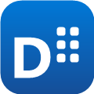

윈도우 바탕화면에 구글 캘린더와 할 일을 띄워 두는 무료 달력 위젯입니다. 창을 따로 열지 않고 바탕화면에서 바로 일정을 보고, 더하고, 고칠 수 있습니다.
D-deskcal is a free desktop calendar widget for Windows. It shows the events in your Google Calendar and the items in your Google Tasks on your desktop, and writes your changes back to Google.
D-deskcal 은 바탕화면에 붙어 있는 달력입니다. 구글 계정으로 로그인하면 구글 캘린더의 일정과 구글 할 일(Google Tasks)을 그대로 보여 주고, 여기서 고친 것은 구글에도 반영됩니다. 로그인하지 않고 이 컴퓨터에만 저장하며 쓸 수도 있습니다.
Windows 10 / 11 · 무료 · 설치 후 자동으로 업데이트됩니다.
아래 권한만 청합니다. 구글에서 받아 온 일정과 할 일은 이 컴퓨터에만 저장하며, 저희 서버로 보내지 않습니다.
| 구글 캘린더 calendar |
달력에 일정을 보여 주고, 여기서 만든 · 고친 · 지운 일정을 구글에 반영하기 위해 필요합니다. |
|---|---|
| 구글 할 일 tasks |
할 일 목록을 보여 주고, 여기서 더하거나 완료 표시한 것을 구글에 반영하기 위해 필요합니다. |
| 이메일 주소 userinfo.email · openid |
설정 화면에 "어느 계정으로 로그인했는지" 를 보여 주기 위해서만 씁니다. |
로그아웃하면 이 컴퓨터에 저장된 구글 자료도 함께 지워집니다.
"AI 일정 추가" 를 쓰면 그때 적어 넣은 글이 구글 Gemini 로 전송됩니다 (generativelanguage.googleapis.com). 글에서 날짜와 제목을 뽑아내기 위해서입니다. 캘린더 일정이나 할 일 자체가 전송되지는 않으며, 이 기능을 쓰지 않으면 아무것도 전송되지 않습니다.
개인 API 키를 넣지 않은 경우, 키를 받기 위해 개발자가 운영하는 중계 서버를 한 번 거칩니다. 그때 오가는 것은 키와 사용량 확인 값뿐이고 적어 넣은 글은 지나가지 않습니다. 자세한 내용은 개인정보처리방침을 봐 주세요.
D-deskcal is a free desktop calendar widget for Windows. It sits on the desktop and shows the events in your Google Calendar and the items in your Google Tasks, so you can read and edit your schedule without opening a browser. Changes made in the widget are written back to Google.
It requests the Google Calendar and Google Tasks scopes to read and write those items on your behalf, and your email address only to display which account is signed in. Calendar events and tasks retrieved from Google are stored only on the user's own computer and are never sent to any server operated by us.
The optional AI entry feature sends the text the user types into it to Google Gemini in order to extract a date and a title. Calendar events and tasks are not part of that request, and nothing is sent unless the user uses that feature. See the Privacy Policy for details.
Developer: Dooseong Jin · Windows 10/11 · Free of charge